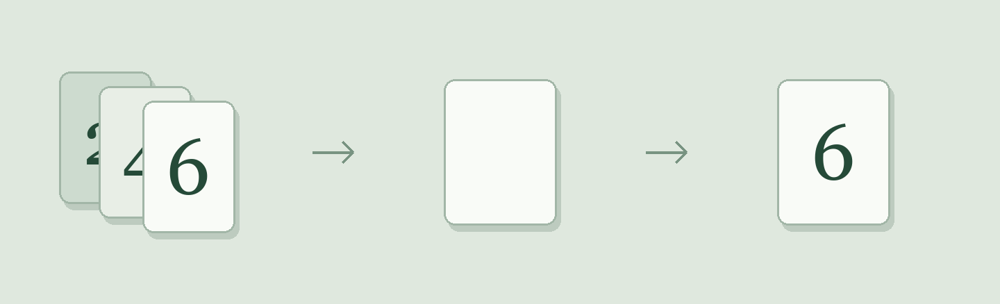

Approches expérimentales de la cognition
Mémoire à court terme
Mémorisez les éléments qui apparaissent un à un. Indiquez ensuite si l’élément présenté après la pause faisait partie de la série.

10 minutes maximum après le démarrage. Il y a 2 essais d’entraînement et 36 essais de test. Gardez cette page ouverte et répondez le plus vite possible tout en évitant les erreurs.
Passation pilote.
Choisissez un seul test.
Test terminé
Téléchargez le CSV. Si vous avez reçu une invitation, renvoyez le fichier dans la même conversation privée.